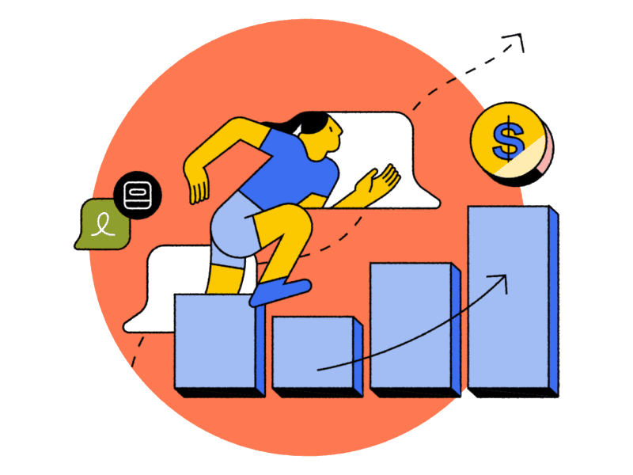
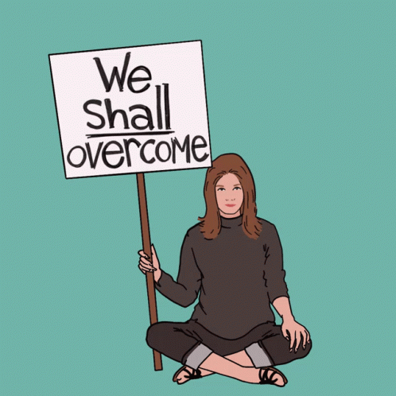
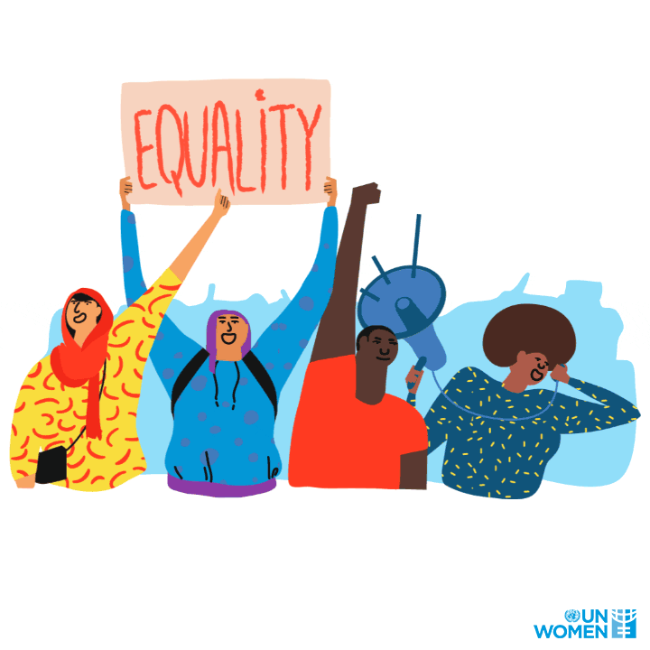
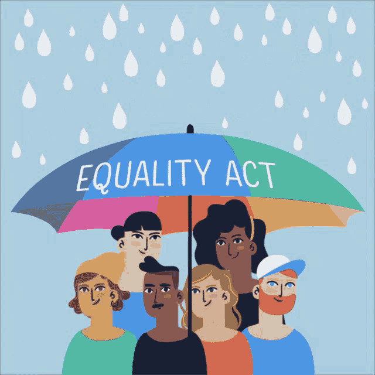

من خلال تحميل أرباب العمل المسؤولية عن وضع ممارسات الأجور العادلة وتمكين المرأة اقتصاديًا ، فإن شفافية الأجور هي أداة بسيطة لسد فجوات الأجور بين الجنسين والعرقية. على سبيل المثال ، في كولورادو ، حيث كان قانون شفافية نطاق الأجور ساري المفعول منذ عام 2021 ، وجدت دراسة أن الأجور على الوظائف الشاغرة قد ارتفعت في المتوسط !. توفر ممارسات الأجور الشفافة للنساء إمكانية الوصول إلى معلومات الرواتب ، وتمكينهن من التفاوض بشأن عروض العمل بشكل أكثر فعالية. من خلال معرفة نطاق الراتب النموذجي لوظيفة معينة ، يمكن للمرأة الدخول في مفاوضات بثقة والتأكد من حصولها على تعويض عادل. يساعد هذا في منع المواقف التي قد تقبل فيها المرأة عن غير قصد رواتب أقل بسبب نقص المعلومات.
حلول
من المهم إيجاد حلول لعدم المساواة بين الجنسين في فرص العمل لأنها يضمن المساواة في الحصول على فرص العمل ، ويعزز النمو الاقتصادي ، ويحد من الفقر والاستبعاد الاجتماعي ، ويعزز مجتمعًا أكثر إنصافًا وعدالة.
شفافية الدفع

التنمية الاجتماعية والانفتاح الثقافي

من المهم تبادل الثقافات والمعرفة من أجل التخلي عن التعصب وتعظم العادات والتقاليد. يساهم التغيير في العقلية بشكل كبير في تحسين وضع المرأة العاملة ، بحيث تختفي التصورات السلبية والانتقادات القاسية ، مما يمهد الطريق أمام المرأة للعمل بحرية. يمكن للتنمية الاجتماعية والانفتاح الثقافي أن يتحدى ويحول الأعراف والتوقعات الجنسانية التقليدية التي تحد من الخيارات المهنية للمرأة. من خلال تعزيز المساواة بين الجنسين وتحدي الصور النمطية ، يمكن للمجتمعات أن تخلق بيئة يتم فيها تشجيع النساء على متابعة مسارات وظيفية متنوعة والحصول على فرص عمل متساوية.
التقييمات القائمة على المهارة

يجب أن يُلزم أصحاب العمل بدفع أجور متساوية للرجال والنساء عن أداء نفس الوظيفة. يمكن للحكومة فرض ذلك من خلال التشريعات أو من خلال توفير الحوافز لأصحاب العمل الذين يظهرون ممارسات رواتب عادلة. توفر التقييمات القائمة على المهارات طريقة موضوعية وموحدة لتقييم قدرات وكفاءات المرشحين. يقلل هذا النهج من تأثير التحيزات والأحكام الذاتية التي يمكن أن تضر بالمرأة في عمليات التوظيف التقليدية. من خلال التركيز على المهارات والأداء ، يمكن للمرأة عرض قدراتها وتقييمها فقط على أساس الجدارة.
إنشاء الرقابة الأخلاقية

يضمن الإشراف الأخلاقي إنشاء آليات إبلاغ سرية ويمكن الوصول إليها بشأن قضايا مكان العمل. هذا يمكّن المرأة من الإبلاغ عن أي حالات تحرش أو تمييز أو سلوك غير أخلاقي دون خوف من الانتقام. من خلال تعزيز بيئة إبلاغ آمنة ، فإن الرقابة الأخلاقية تمكن المنظمات من معالجة المشكلات وتصحيحها على الفور ، مما يزيد من تعزيز فرص العمل للنساء ، ويتم حل مشكلة التحرش من خلال وضع الرقابة والعقوبات على المتحرش. وبالتالي ، ستنخفض حالات التحرش بشكل كبير وستزداد ثقة المرأة بنفسها. كما يجب إعادة تأهيل النساء للتعامل مع مثل هذه الحالات من أجل التحرر من الصمت والخوف.